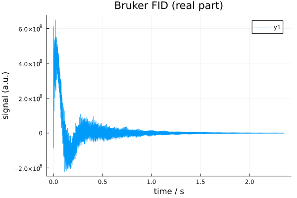
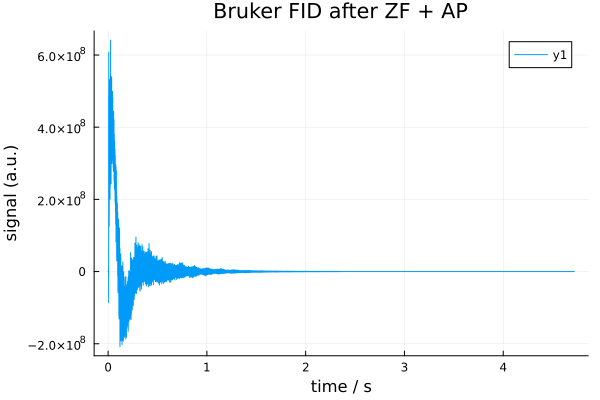
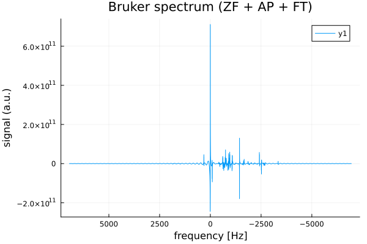
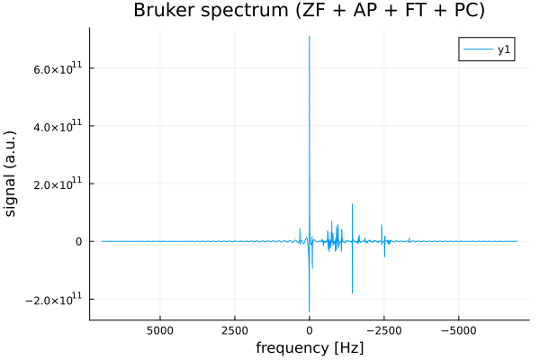
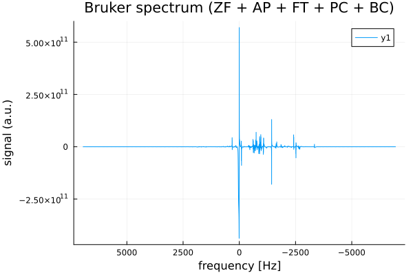
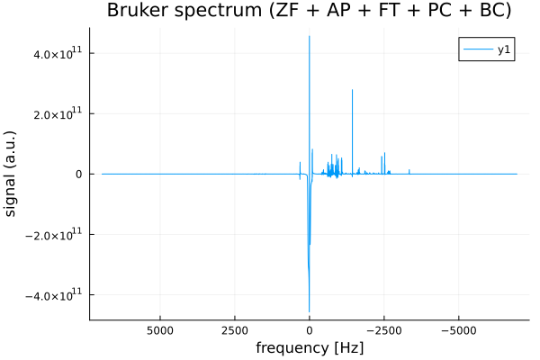

1. Classical Processing Pipeline
NMRflux.jl provides a flexible framework for defining and combining NMR processing operations through the abstract type NMRProcessor. Processing tools are implemented as callable objects ("functors") that act on SpectData (or, via a fallback, on plain arrays) and can be chained together into processing pipelines. NMRflux.jl provides a number of processing functions built on top of NMRProcessor:
1.1 The NMRProcessor abstraction
At the core of the processing framework is the abstract type:
abstract type NMRProcessor <: Function endSubtypes of NMRProcessor behave like functions: they can be called using function call syntax, e.g. p(x), but also carry internal state (such as parameters, FFT plans, etc.). Processing tools should be defined as structs that subtype NMRProcessor and implement a call method for SpectData.
1.2 Chaining processors
Multiple processing operations can be combined into a single processor using Chain:
Chain(fs::Vararg{NMRProcessor}) = reduce(∘, reverse(fs))E.g.:
Chain(p1, p2, p3)This returns a new processor that applies the given tools in the "order" they are listed. That is is equivalent to:
x |> p1 |> p2 |> p3Loading a simple dataset
using NMRflux
using NMRflux.Examples
using Plots: plot, savefig
data_bruker = NMRflux.Examples.Data["HCC cell culture media spectra"]
params_bruker, data_td_bruker = NMRflux.load(joinpath(data_bruker["path"], "10"), :Bruker)(Dict{String, Any}("O4" => 4323.302, "PCPD" => [0, 80, 0, 0, 0, 0, 0, 0, 0, 0], "PLWMAX" => Real[137.2804, 0, 0, 0, 0, 0, 0, 0], "PQSCALE" => 1, "TE" => 297.9999, "FQ5LIST" => "<>", "RECPRE" => [-1, 0, -1, -1, -1, -1, -1, -1, -1, -1 … -1, -1, -1, -1, -1, -1, -1, -1, -1, -1], "VPLIST" => "<>", "VCLIST" => "<>", "O7" => 4323.302…), ComplexF64[-6.9423121078125e7 + 1.047522298828125e8im, 3.713936376171875e8 - 5.873334321640625e8im, 4.89205430609375e8 - 1.33556210878125e9im, 1.36027642265625e7 - 1.0152351535234375e9im, -5.90617235546875e7 - 8.273014788203125e8im, -8.6232552546875e7 - 5.643557254375e8im, -398472.4296875 - 5.26599649140625e8im, -1.78959229921875e7 - 4.263141174296875e8im, 1.67038894921875e7 - 3.65753820171875e8im, 4.84514783984375e7 - 2.174211429765625e8im … -416306.875 - 498250.46875im, -283007.765625 - 183694.90625im, -420138.875 + 79240.765625im, -175130.375 + 254453.578125im, -25309.578125 + 487678.984375im, 0.0 + 0.0im, 0.0 + 0.0im, 0.0 + 0.0im, 0.0 + 0.0im, 0.0 + 0.0im])t = data_td_bruker.coord[1]
y = real.(data_td_bruker.dat)
plot(t, y;
xlabel = "time / s",
ylabel = "signal (a.u.)",
title = "Bruker FID (real part)")
savefig("loaded_FID.svg"); nothing
1.3 Zero filling (ZeroFill)
Zero filling extends the length of a time domain FID by appending additional points with value zero. This increases digital resolution in the subsequent Fourier transform but does not add new experimental information. It is usually applied as the first processing step.
In NMRflux.jl, zero filling is implemented by the processor ZeroFill, which acts on SpectData. It pads the underlying data array with zeros and, if the coordinate axis is evenly spaced (as in a typical time axis), extends that coordinate with the same step size to the new length. Using the time domain Bruker FID defined earlier (data_td_bruker):
N_orig = length(data_td_bruker.dat) # Original number of points
N_target = 2^16 # Target size: 64k points (2^16)
N_new = max(N_orig, N_target) # Never shrink: only zero fill if N_orig < N_target
zf = ZeroFill([N_new]) # Create ZeroFill processor
data_td_bruker_zf = zf(data_td_bruker) # Apply zero filling to the SpectData object
(size(data_td_bruker.dat), size(data_td_bruker_zf.dat)) # Before/after sizes((32693,), (65536,))t_zf = data_td_bruker_zf.coord[1]
y_zf = real.(data_td_bruker_zf.dat)
plot(t_zf, y_zf;
xlabel = "time / s",
ylabel = "signal (a.u.)",
title = "Bruker FID after zero filling")
savefig("bruker_fid_zf_plot.svg"); nothing1.4 Apodization (Apodize)
Apodization applies a decay function (window) to the time-domain FID. In practice, this damps the tail of the FID, reducing truncation artefacts and high frequency noise in the frequency domain at the cost of some line broadening. It is typically applied after zero filling and before the Fourier transform.
In NMRflux.jl, apodization is implemented by the processor Apodize, which acts on SpectData by multiplies the data along selected dimensions by an exponential factor of the form:
f(t) = exp.(-R * t)where:
- The
tis the coordinate axis of the processed dimension (usually time) - The
Ris the user specified decay constant for that dimension
Internally, Apodize uses the coordinate vector of each selected dimension to compute this exponential weighting and multiplies it into the underlying data array. The coordinate vectors are preserved. For time domain FIDs, R therefore has units of 1/seconds. Continuing from the previous section, we apply apodization to the zero filled FID data_td_bruker_zf:
ap = Apodize([0.5]) # Decay constant for the first (time) dimension
data_td_bruker_zf_ap = ap(data_td_bruker_zf)
size(data_td_bruker_zf_ap.dat), data_td_bruker_zf_ap.coord[1][1:5]((65536,), 0.0:7.199999999999995e-5:0.0002879999999999998)This produces a windowed time domain signal suitable for Fourier transformation.
# Extract time axis and real part AFTER apodization
t_ap = data_td_bruker_zf_ap.coord[1]
y_ap = real.(data_td_bruker_zf_ap.dat)
plot(t_ap, y_ap; xlabel="time / s", ylabel="signal (a.u.)", title="Bruker FID after ZF + AP")
savefig("bruker_fid_zf_ap_plot.svg"); nothing
1.5 Fourier transform (FourierTransform)
The Fourier transform converts a time domain FID into a frequency domain spectrum. After zero filling and apodization, applying the FFT produces a complex spectrum whose real and imaginary parts can be used for further processing (phase correction, baseline correction, peak picking, etc.).
In NMRflux.jl, the processor FourierTransform wraps FFTW's FFT planning and updates the coordinate axes accordingly. For each transformed dimension:
- The FFT is applied to the data
- The coordinate axis is replaced by a frequency axis based on the sampling interval (Nyquist theorem)
- By default, the spectrum is shifted so that zero frequency appears at the centre (fftshift = true). This behaviour can be disabled by setting fftshift = false.
The FourierTransform constructor is declared as:
function FourierTransform(SI::Vector, dims::Vector; fftshift = true)
dummy = zeros(ComplexF64, SI...)
plan = FFTW.plan_fft(dummy, dims)
return FourierTransform(dims, SI, fftshift, plan)
endSI: size of the data array (e.g. [N] for 1D, [N1, N2] for 2D)dims: dimensions along which the FFT is computed (e.g. [1], [1, 2])fftshift: whether to apply FFTW.fftshift so that zero frequency is in the centre of the axis
Example: Continuing from Section 4.4, we start from the apodized, zero filled FID data_td_bruker_zf_ap:
SI = [length(data_td_bruker_zf_ap.dat)] # Size of the apodized time domain data (1D)
ft = FourierTransform(SI, [1]; fftshift = true) # Construct a FourierTransform along the first dimension, with fftshift
data_fd_bruker_zf_ap = ft(data_td_bruker_zf_ap) # Apply FT to the apodized zero filled SpectData
size(data_fd_bruker_zf_ap.dat)(65536,)f_ap = data_fd_bruker_zf_ap.coord[1] # frequency axis (Hz)
y_ap = real.(data_fd_bruker_zf_ap.dat) # real spectrum
plot(f_ap, y_ap, xaxis=:flip,
xlabel = "frequency [Hz]",
ylabel = "signal (a.u.)",
title = "Bruker spectrum (ZF + AP + FT)")
savefig("bruker_fd_zf_ap_plot.svg"); nothing
1.6 Phase correction (PhaseCorrect)
After Fourier transformation, NMR spectra generally require phase correction to produce pure absorption mode lineshapes in the real part of the spectrum. The PhaseCorrect applies a zero order and first order phase correction along a chosen dimension.
ph0: zero order phase (radians), a uniform rotation applied to all pointsph1: first order phase (radians per axis unit), a linear phase rampdim: the dimension along which the correction is applied (typically 1 for 1D spectra)
The correction applied is:
c(t)=eiph0⋅eiph1twhere t is the coordinate axis of the spectrum (in Hz for frequency domain data).
Example: phase correction of the Bruker spectrum
Continuing from the previous section, we start from the frequency domain, zero filled, apodized spectrum data_fd_bruker_zf_ap:
ph0 = 0 # zero-order phase (radians)
ph1 = π # first-order phase (radians)
dim = 1 # apply along the first (frequency) dimension
pc = PhaseCorrect(ph0, ph1, dim)
data_fd_bruker_zf_ap_pc = pc(data_fd_bruker_zf_ap)
eltype(data_fd_bruker_zf_ap.dat), ndims(data_fd_bruker_zf_ap.dat)
# size(data_fd_bruker_zf_ap_pc.dat), data_fd_bruker_zf_ap_pc.coord[1][1:5](ComplexF64, 1)f_pc = data_fd_bruker_zf_ap_pc.coord[1] # frequency axis (Hz)
y_pc = real.(data_fd_bruker_zf_ap_pc.dat) # real part after phase correction
plot(f_pc, y_pc, xaxis=:flip,
xlabel = "frequency [Hz]",
ylabel = "signal (a.u.)",
title = "Bruker spectrum (ZF + AP + FT + PC)")
savefig("bruker_fd_zf_ap_pc_plot.svg"); nothing
In practice, ph0 and ph1 would be adjusted (e.g. interactively or by an automatic optimizer) until the peaks in the real part of data_fd_jeol_zf_ap_pc are symmetric and purely absorptive. Via the generic NMRProcessor1D machinery, PhaseCorrect can also be applied slice wise along a chosen dimension of higher dimensional SpectData objects.
1.7 Baseline correction (MedianBaselineCorrect)
After phase correction, spectra often exhibit slowly varying offsets or slopes in the real part, known as baseline distortions. These can bias peak integration and make peak picking less reliable. Baseline correction should be applied after phase correction, so that the real part contains the absorptive peaks. The MedianBaselineCorrect implements a robust baseline correction for the real part of a spectrum. The algorithm follows the method of M. S. Friedrichs (Journal of Biomolecular NMR, 5 (1995) 147-153) and proceeds as follows along a chosen dimension:
- For each position along the axis, a local window of width
2 * wdw + 1points is considered - Within this window, local extrema (minima and maxima) of the real part are extracted
- The median of these extrema is taken as a robust estimate of the local baseline
- The sequence of baseline estimates is then smoothed by convolution with a Gaussian like kernel
- The resulting smooth baseline is subtracted from the original complex data (affecting primarily the real part)
The processor is constructed as:
NMRflux.MedianBaselineCorrect(dim; wdw = 256)where:
dim: dimension along which baseline correction is performed (typically 1 for 1D spectra)wdw: half width of the local window in points (controls the "smoothness" scale of the baseline)
Example: Continuing from the previous section, we start from the phased frequency domain spectrum data_fd_bruker_zf_ap_pc:
mbc = NMRflux.MedianBaselineCorrect(1; wdw = 256) # baseline correction along frequency dimension
data_fd_bruker_zf_ap_pc_bc = mbc(data_fd_bruker_zf_ap_pc)
size(data_fd_bruker_zf_ap_pc_bc.dat), data_fd_bruker_zf_ap_pc_bc.coord[1][1:5]((65536,), -6944.44444444445:0.21193085967633934:-6943.596721005744)f_bc = data_fd_bruker_zf_ap_pc_bc.coord[1] # frequency axis (Hz)
y_bc = real.(data_fd_bruker_zf_ap_pc_bc.dat) # real part after baseline correction
plot(f_bc, y_bc, xaxis=:flip,
xlabel = "frequency [Hz]",
ylabel = "signal (a.u.)",
title = "Bruker spectrum (ZF + AP + FT + PC + BC)")
savefig("bruker_fd_zf_ap_pc_bc_plot.svg"); nothing
Here:
dim = 1selects the first dimension (the frequency axis) for baseline correctionwdw = 256sets the half width of the local window; larger values produce a smoother, more slowly varying baseline estimate
The output data_fd_jeol_zf_ap_pc_bc is a SpectData object with the same coordinates as the input but with the baseline of the real part largely removed, providing a cleaner spectrum for peak picking and integration.
1.8 A typical 1D processing pipeline
In practice, the processing steps described above are often combined into a single pipeline that transforms a raw time domain FID into a clean, baseline corrected spectrum ready for peak picking and integration.
For 1D data, a typical sequence is:
- Zero filling
- Apodization
- Fourier transform
- Phase correction
- Baseline correction
The NMRflux.jl allows these processors to be combined using Chain, which applies them in sequence.
# (1) Loading Bruker data
params_bruker, data_td_bruker = NMRflux.load(joinpath(data_bruker["path"], "10"), :Bruker)
# (1) Zero filling
N_orig = length(data_td_bruker.dat) # Original number of points
N_target = 2^16 # Target size: 64k points
N_new = max(N_orig, N_target) # Never shrink: only zero fill if N_orig < N_target
zf = ZeroFill([N_new])
# (2) Apodization (time-domain exponential)
ap = Apodize([0.5]) # Decay constant for the first (time) dimension
# (3) Fourier transform (1D, with fftshift)
SI = [N_new] # Size of the apodized time domain data (1D)
ft = FourierTransform(SI, [1]; fftshift = true) # FT along dim 1, with fftshift
# (4) Phase correction (example values)
ph0 = 0.0 # zero order phase (radians)
ph1 = 0.0 # first order phase (radians per Hz)
freq_dim = 1 # frequency axis is dimension 1
pc = PhaseCorrect(ph0, ph1, freq_dim)
# (5) Baseline correction on the frequency dimension
mbc = NMRflux.MedianBaselineCorrect(1; wdw = 256) # window half width = 256 points
# Build the processing chain: ZeroFill -> Apodize -> FT -> Phase -> Baseline
p = Chain(zf, ap, ft, pc, mbc)
bruker_data_processed = p(data_td_bruker) # Run the processing chain
size(bruker_data_processed.dat), bruker_data_processed.coord[1][1:5]((65536,), -6944.44444444445:0.21193085967633934:-6943.596721005744)f_proc = bruker_data_processed.coord[1] # frequency axis (Hz)
y_proc = real.(bruker_data_processed.dat) # real part of processed spectrum
plot(f_proc, y_proc, xaxis=:flip,
xlabel = "frequency [Hz]",
ylabel = "signal (a.u.)",
title = "Bruker spectrum (ZF + AP + FT + PC + BC)")
savefig("bruker_full_pipeline_plot.svg"); nothing